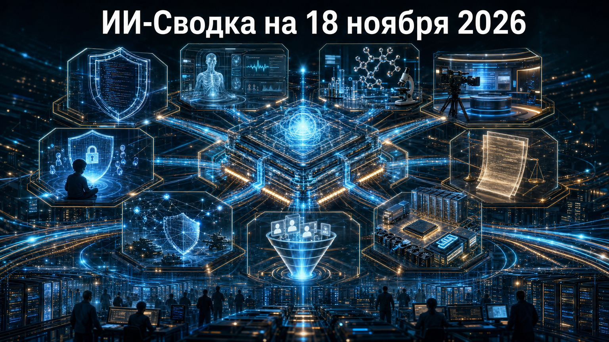

Повестка дня показывает, что конкуренция в ИИ идёт одновременно на уровне моделей, прикладных продуктов и физической инфраструктуры. Microsoft усиливает собственный модельный стек, NVIDIA акцентирует устойчивость производственной цепочки, а OpenAI расширяет специализированные сценарии — от медицины и науки до продаж, права и киберзащиты.
Для компаний главный сигнал состоит в том, что универсальная модель всё чаще становится лишь базой для отраслевых продуктов, контролируемого доступа и интеграций в конкретные рабочие процессы.
Microsoft на Ignite представила набор собственных MAI-моделей для программирования, кибербезопасности, редактирования изображений, речи и транскрибации. По данным GeekWire, MAI Code 2 стала доступна в GitHub Copilot, а MAI Cyber 2 Flash вошла в линейку моделей для киберзадач.
Компания также продвигает программу MAI Licensed Weights: заказчики смогут адаптировать отдельные модели на своих данных и запускать их в Azure. Это укрепляет курс Microsoft на собственный модельный слой рядом с партнёрскими моделями; заявления о цене и сравнительной производительности остаются оценками самой компании и требуют независимой проверки.
NVIDIA опубликовала материал о развитии производственной цепочки, необходимой для выпуска современной ИИ-инфраструктуры. В публикации NVIDIA акцентирует техническую экспертизу партнёров, доверие между участниками производства и необходимость постоянных инженерных изменений.
Это не продуктовый релиз с новыми характеристиками оборудования, а стратегический сигнал о сложности масштабирования ИИ-фабрик. Для рынка он важен тем, что дефицитным ресурсом становятся не только ускорители, но и координация поставщиков компонентов, сетей, систем охлаждения и сборки стоек.
OpenAI опубликовала анонс More ways to move care forward with ChatGPT for Healthcare, посвящённый дальнейшему развитию применения ChatGPT в здравоохранении. Сам факт публикации подтверждает расширение внимания компании к специализированному медицинскому направлению.
Для медицинских организаций это означает, что ИИ-продукты всё активнее оформляются как отдельные отраслевые решения, а не как универсальные чат-интерфейсы. Практическая ценность таких систем зависит от интеграции в клинические процессы, защиты данных и процедур человеческой проверки, которые в кратком анонсе не детализированы.
OpenAI сообщила о стратегическом партнёрстве с медиа-подразделением LVMH в публикации LVMH’s Media Division announces strategic partnership with OpenAI. Это ещё один пример того, как разработчики моделей ищут отраслевые каналы внедрения в медиа, брендах и производстве контента.
Детали коммерческой модели, объём интеграции и перечень продуктов в доступном анонсе не раскрываются. Однако для рынка важен сам сдвиг: медийные активы крупных потребительских групп становятся площадкой для внедрения ИИ в редакционные, маркетинговые и контентные процессы.
В материале Science at the Frontier: How scientists use ChatGPT OpenAI обратилась к использованию ChatGPT в научной работе. Публикация развивает линию компании на закрепление ИИ как инструмента для исследовательских задач.
Для научных команд ценность таких систем определяется не только скоростью подготовки текста или кода, но и воспроизводимостью, источниками данных и проверкой результатов специалистами. Анонс не является независимым доказательством научной эффективности, но показывает, что научный сегмент становится отдельным направлением продуктовой дистрибуции.
OpenAI выпустила сообщение Strengthening the fight against online child sexual abuse with new tools and support, посвящённое новым инструментам и поддержке для противодействия сексуальной эксплуатации детей в интернете.
Тема показывает, что безопасность генеративных систем всё чаще включает не только фильтрацию ответов модели, но и внешние механизмы обнаружения злоупотреблений, взаимодействие с профильными организациями и операционную поддержку. Технические параметры и результаты внедрения в доступной публикации не раскрыты, поэтому их нельзя трактовать как независимо подтверждённую эффективность.
OpenAI опубликовала анонс Astra for Law leads in legal intelligence, посвящённый применению Astra в юридической аналитике. Компания позиционирует это направление как специализированный сценарий работы с правовой информацией.
Для юридического рынка развитие таких продуктов означает переход от общих LLM к решениям, ориентированным на поиск, анализ и подготовку материалов в профессиональном контексте. Но юридические выводы моделей требуют проверки юристом: отраслевой интерфейс или позиционирование не заменяют верификацию источников, актуальности права и аргументации.
В публикации Strengthening NATO and allied cyber defenses with AI OpenAI сообщила о работе над усилением киберзащиты НАТО и союзных стран с применением ИИ. Это продолжает линию компании на специализированное использование моделей в оборонительной кибербезопасности.
Практический смысл таких программ зависит от режима доступа, журналирования действий, ограничений инструментов и разделения оборонительных и наступательных сценариев. В доступном анонсе не приводятся технические детали развёртывания, поэтому его следует рассматривать как заявление о направлении сотрудничества, а не как независимую оценку его результатов.
OpenAI анонсировала ChatGPT for Sales — специализированное направление ChatGPT для задач продаж. Релиз отражает тенденцию к упаковке базовых возможностей моделей в продукты для конкретных корпоративных функций.
Для компаний это означает смещение от экспериментов с универсальным чат-ботом к более структурированным сценариям для коммерческих команд. Эффект будет зависеть от качества данных, интеграции с CRM, правил доступа и того, сохраняется ли у менеджера контроль над внешними сообщениями и решениями.
OpenAI выпустила GPT-6.2 Astra и Sol, о чём сообщила в официальной публикации Introducing GPT-6.2 Astra and Sol. Это новый этап развития основной линейки моделей компании, ориентированной на профессиональные, агентные и разработческие сценарии.
Для рынка особенно важна связка новых моделей с прикладными продуктами и контролем рисковых возможностей: модели становятся основой не только чатов, но и систем, способных выполнять многошаговые рабочие задачи. Сравнительные показатели и заявления о преимуществах следует трактовать как данные OpenAI до появления независимых тестов.